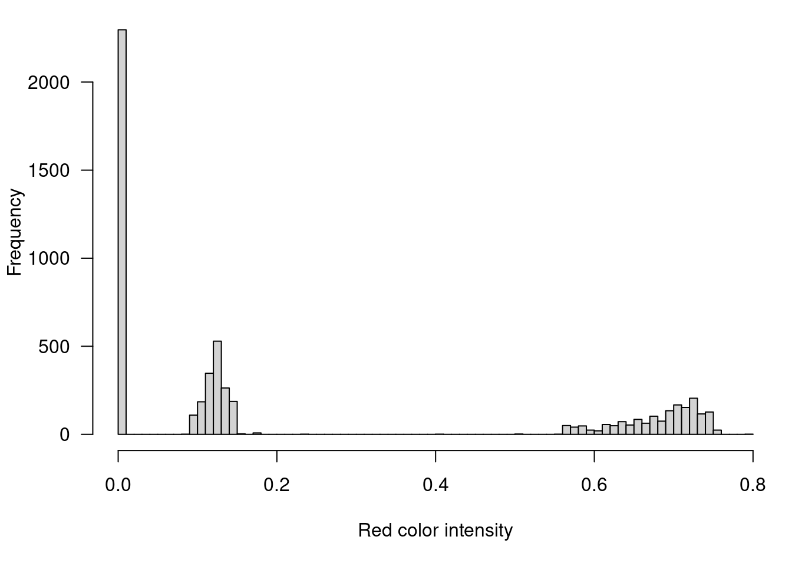

9 Rendering the R logo in Minecraft
As a further illustration of use of the miner package to interact with Minecraft from R, here I will render the R logo within Minecraft.
9.1 Load and prepare an image file
First, let’s download the image file from the web. We’ll load it directly into R from the web using the imager package.
Print to see the size of the image.
## Image. Width: 724 pix Height: 561 pix Depth: 1 Colour channels: 4The image is stored as a 4-dimensional array: horizontal and vertical position, time, and color.
## [1] 724 561 1 4Let’s reduce the size to 80x70.
There is a bit of shading in the logo, but mostly there are three colors: transparent, gray, and blue. If we look at a histogram of the first color channel (red), we can see the three pieces:
par(mar=c(5.1,4.1,0.6,0.6), las=1)
hist(logo[,,,1], breaks=100, main="",
xlab="Red color intensity")
So let’s truncate at 0.05 and 0.4.
9.2 Render in Minecraft
Now let’s load the miner package, connect to the MineCraft server, and find a spot to place the logo.
Now let’s render the R logo using gray and blue wool, leaving parts transparent.
First, we pick out the blue and gray wool blocks, to get the item and style IDs.
Now we try rendering the logo.
for(i in 1:nrow(logo)) {
for(j in 1:ncol(logo)) {
if(logo[i,j] == 2)
setBlock(host_pos[1]+(nrow(logo)-i),
host_pos[2]+(ncol(logo)-j),
host_pos[3],
blue[2], blue[3])
if(logo[i,j] == 3)
setBlock(host_pos[1]+(nrow(logo)-i),
host_pos[2]+(ncol(logo)-j),
host_pos[3],
gray[2], gray[3])
}
}The result looks like this: